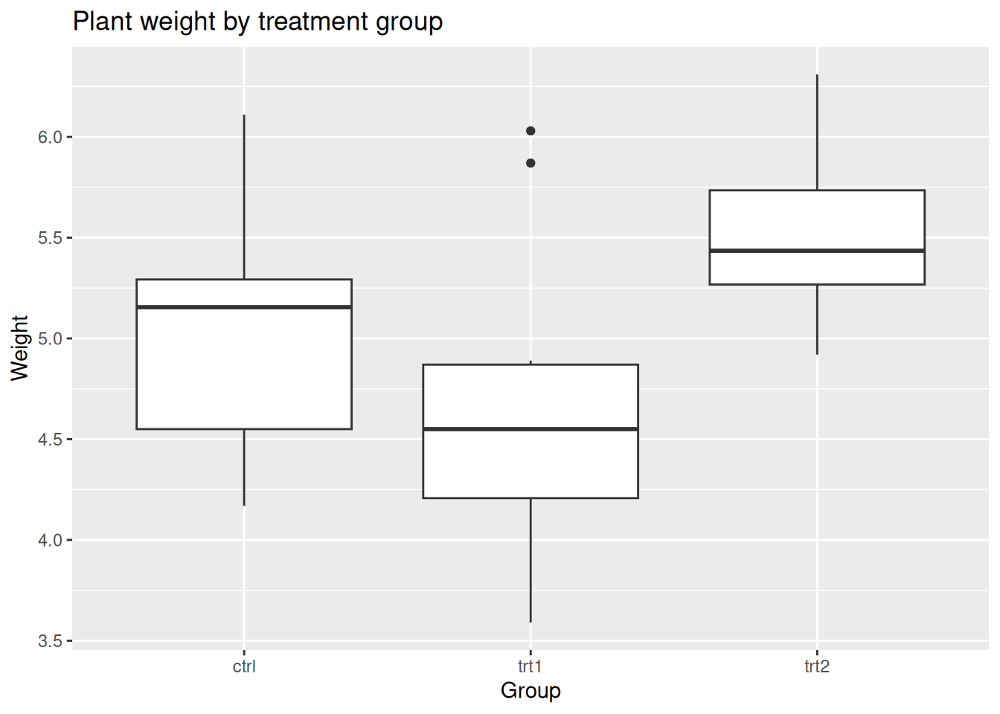

Code
flowchart LR
A[AP calculus in HS] --> U[University]
A --> P[Pass calculus]
U --> Pflowchart LR A[AP calculus in HS] --> U[University] A --> P[Pass calculus] U --> P
Study design, two-group inference, and comparing more than two groups
Project: Project 4, Designing Fair Comparisons · Preview: Read 0 · Prerequisite: Module 3 · Next: Quiz A, then the demo labs.
This reading is your self-paced textbook for Module 4. It has three sections. Work one section at a time and use the Check yourself box at the end of each before Quiz A.
Throughout, we use one habit for comparing two groups. When you see a difference between the groups in the data, first ask which of three explanations could produce it: it could be by chance, it could be a real causal effect, or it could be confounding. A randomized controlled trial removes confounding as an explanation (random assignment balances other variables), and a small p-value lets you set aside the by-chance explanation. What is left is the causal explanation.
lm) and to binary outcomes (glm). Project 4 stays a two-group comparison, so this section is for awareness and your methods map.After this reading you should be able to:
t.test() for two independent numerical groups or prop.test() / chisq.test() for binary comparisons, and name the conditions that match the methods map.lm() then anova()) for a numerical outcome across three or more groups.glm(..., family = binomial) then anova(fit, test = "Chisq")) for a binary outcome across groups.Project 4 asks you to design a fair comparison between two groups. This section gives you the vocabulary: EV, RV, RCT vs observational, confounding, and what a p-value can and cannot tell you about causation.
A causal question asks about the effect of something. Name two roles:
| Role | Other names | Meaning |
|---|---|---|
| Response (RV) | outcome, dependent | The effect you want to compare. |
| Explanatory (EV) | treatment, exposure | The potential cause or group label. |
When writing a causal research question, it is best practice to:
prop.test / chisq.test. You will do this in Section 2.Suppose the two groups in your data differ. Before claiming anything, list the three explanations:
A hypothesis test and its p-value address explanation 1 only. A small p-value lets you set aside the by-chance explanation. It does not, by itself, help you choose between causation and confounding. That is the job of study design.
Two design tools tell the explanations apart:
Students often confuse random assignment with random sampling:
Suppose a state has two polytechnic universities and the Chancellor’s Office wants to know which one does a better job teaching calculus to incoming freshmen.
This example is a modification of a story in Pearl, Judea, and Dana Mackenzie, The Book of Why: The New Science of Cause and Effect (Basic Books, 2018).
Crude pass rates. Both universities have a calculus class of 200 students:
| Passed calculus | |
|---|---|
| Timber Ridge | 150/200 (75%) |
| Wild Horse | 154/200 (77%) |
Wild Horse has more students who passed (154 vs 150). But these are observational groups: students chose a university; the Chancellor did not randomly assign them. A higher crude rate does not by itself answer the causal question.
If we know who took AP Calculus in high school:
| AP calculus | No AP calculus | Combined | |
|---|---|---|---|
| Timber Ridge | 45/50 (90%) | 105/150 (70%) | 150/200 (75%) |
| Wild Horse | 136/170 (80%) | 18/30 (60%) | 154/200 (77%) |
Each cell shows number who passed / number of students in that cell. Read down each column (holding preparation fixed):
So within each preparation level, Timber Ridge does better. The crude comparison reversed once we accounted for AP background. This reversal is Simpson’s paradox, driven by a confounder.
A confounder (for the effect of explanatory variable \(X\) on response \(Y\)) is a variable that influences both \(X\) and \(Y\).
A causal directed acyclic graph (DAG) is a picture of assumed causal paths. Nodes are variables. A directed edge \(A \rightarrow B\) means “A helps cause B.” Acyclic means no directed cycles. The defining picture of a confounder is two arrows leaving it: one arrow goes from the confounder to the explanatory group, and a second arrow goes from the confounder to the outcome. A third arrow goes from the explanatory group to the outcome (the effect you want to measure).
A backdoor path is a non-causal route that leaks association into the crude \(X\) to \(Y\) link, for example \(U \leftarrow A \rightarrow P\) where \(U\) is university, \(P\) is passing, and \(A\) is AP calculus. Conditioning on \(A\) (comparing universities within AP and no-AP subtables) blocks that path. This is called subclassification (or stratification).
flowchart LR
A[AP calculus in HS] --> U[University]
A --> P[Pass calculus]
U --> Pflowchart LR A[AP calculus in HS] --> U[University] A --> P[Pass calculus] U --> P
Not everything should be adjusted for. Suppose the campus tutoring center is part of what each university provides. Then tutoring is downstream of university, it lies on the causal path from university to passing, not on a backdoor path. Adjusting for it would remove part of the very effect you want to measure.
flowchart LR
U2[University] --> T[Tutoring center use]
U2 --> P2[Pass calculus]
T --> P2flowchart LR U2[University] --> T[Tutoring center use] U2 --> P2[Pass calculus] T --> P2
So under the AP DAG, the AP vs no-AP subclassification is the appropriate fairer comparison; the tutoring breakdown is not the same kind of adjustment. You can trace backdoor paths by hand or use DAGitty to suggest adjustment sets under an assumed graph.
Do you believe the diagram? Before adjusting, ask whether you included every common cause linking university, passing, and the other measured variables. Residual confounding from unmeasured variables (motivation, SES) is always possible. This is exactly why real policy questions need richer datasets, and why an RCT, when feasible, is so valuable.
A DAG with a confounder has three arrows: confounder to group, confounder to outcome, and group to outcome. Each arrow shows up as an association you can plot and summarize with Module 3 tools. Below we simulate a treatment comparison where age group is a confounder, then look at all three arrows. Older patients are sicker (lower outcome) and, in the observational data, are more likely to receive Treatment B.
if (!requireNamespace("tidyverse", quietly = TRUE)) {
install.packages("tidyverse", repos = "https://cloud.r-project.org")
}
library(tidyverse)
set.seed(2024)
N <- 300
# Confounder: age group (younger / older), about half and half
age_group <- sample(c("younger", "older"), N, replace = TRUE, prob = c(0.5, 0.5))
# Arrow 1 (confounder -> group): older patients are more likely to get Treatment B
p_B <- ifelse(age_group == "older", 0.75, 0.25)
treatment <- ifelse(rbinom(N, 1, p_B) == 1, "B", "A")
# Arrow 2 (confounder -> outcome): older patients have lower outcomes.
# Arrow 3 (group -> outcome): Treatment B has a small TRUE benefit of +3.
outcome <- 70 - 12 * (age_group == "older") + 3 * (treatment == "B") + rnorm(N, 0, 6)
conf <- tibble(
age_group = factor(age_group, levels = c("younger", "older")),
treatment = factor(treatment, levels = c("A", "B")),
outcome = outcome
)
glimpse(conf)Rows: 300
Columns: 3
$ age_group <fct> younger, older, younger, younger, older, younger, older, old…
$ treatment <fct> A, B, A, A, A, A, A, B, A, A, A, A, A, A, B, A, B, B, B, B, …
$ outcome <dbl> 74.26722, 57.20574, 68.09254, 76.40501, 67.55353, 72.69615, …Arrow 1, confounder to group. The age mix is different in the two treatment groups, so the groups are not comparable at baseline.
conf |> count(treatment, age_group)# A tibble: 4 × 3
treatment age_group n
<fct> <fct> <int>
1 A younger 101
2 A older 47
3 B younger 41
4 B older 111conf |>
count(treatment, age_group) |>
ggplot(aes(x = treatment, y = n, fill = age_group)) +
geom_col(position = "fill", color = "white") +
labs(title = "Arrow 1: age mix differs by treatment group (confounder to group)",
x = "Treatment", y = "Proportion", fill = "Age group")
Arrow 2, confounder to outcome. Ignoring treatment, older patients have lower outcomes.
conf |>
group_by(age_group) |>
summarize(n = n(), mean_outcome = mean(outcome), sd_outcome = sd(outcome))# A tibble: 2 × 4
age_group n mean_outcome sd_outcome
<fct> <int> <dbl> <dbl>
1 younger 142 70.7 6.15
2 older 158 60.4 5.88ggplot(conf, aes(x = age_group, y = outcome)) +
geom_boxplot() +
labs(title = "Arrow 2: outcome depends on age group (confounder to outcome)",
x = "Age group", y = "Outcome")
Arrow 3, the crude group-to-outcome comparison. Because older (sicker) patients were more likely to get B, the crude comparison is biased against B, even though B truly helps a little.
conf |>
group_by(treatment) |>
summarize(n = n(), mean_outcome = mean(outcome), sd_outcome = sd(outcome))# A tibble: 2 × 4
treatment n mean_outcome sd_outcome
<fct> <int> <dbl> <dbl>
1 A 148 66.3 8.25
2 B 152 64.3 7.48ggplot(conf, aes(x = treatment, y = outcome)) +
geom_boxplot() +
labs(title = "Arrow 3: crude outcome by treatment (confounded comparison)",
x = "Treatment", y = "Outcome")
t.test(outcome ~ treatment, data = conf, var.equal = FALSE)
Welch Two Sample t-test
data: outcome by treatment
t = 2.2036, df = 293.41, p-value = 0.02833
alternative hypothesis: true difference in means between group A and group B is not equal to 0
95 percent confidence interval:
0.2143178 3.7964894
sample estimates:
mean in group A mean in group B
66.27307 64.26767 The crude p-value can be small while pointing the wrong way: B looks worse than A because of the age imbalance, not because B is harmful. The test removed the by-chance explanation, but confounding remains.
Now keep the same people and the same age-to-outcome arrow, but assign treatment at random. Random assignment erases arrow 1 (the confounder no longer drives group membership), so age is balanced across groups and the crude comparison becomes fair.
set.seed(2025)
treatment_rct <- sample(c("A", "B"), N, replace = TRUE) # random assignment, ignores age
outcome_rct <- 70 - 12 * (age_group == "older") + 3 * (treatment_rct == "B") + rnorm(N, 0, 6)
rct <- tibble(
age_group = factor(age_group, levels = c("younger", "older")),
treatment = factor(treatment_rct, levels = c("A", "B")),
outcome = outcome_rct
)
# Arrow 1 is now gone: age mix is about equal in both groups
rct |> count(treatment, age_group)# A tibble: 4 × 3
treatment age_group n
<fct> <fct> <int>
1 A younger 62
2 A older 73
3 B younger 80
4 B older 85rct |>
count(treatment, age_group) |>
ggplot(aes(x = treatment, y = n, fill = age_group)) +
geom_col(position = "fill", color = "white") +
labs(title = "Randomized: age mix is balanced across groups (arrow 1 removed)",
x = "Treatment", y = "Proportion", fill = "Age group")
# Crude comparison now recovers the true +3 benefit of B
rct |>
group_by(treatment) |>
summarize(n = n(), mean_outcome = mean(outcome), sd_outcome = sd(outcome))# A tibble: 2 × 4
treatment n mean_outcome sd_outcome
<fct> <int> <dbl> <dbl>
1 A 135 63.8 7.89
2 B 165 67.1 8.37t.test(outcome ~ treatment, data = rct, var.equal = FALSE)
Welch Two Sample t-test
data: outcome by treatment
t = -3.5367, df = 292.03, p-value = 0.0004711
alternative hypothesis: true difference in means between group A and group B is not equal to 0
95 percent confidence interval:
-5.181136 -1.476314
sample estimates:
mean in group A mean in group B
63.75346 67.08218 With arrow 1 removed, arrow 2 (age to outcome) still exists, but age is spread evenly across the groups, so it no longer biases the comparison. The crude difference in means now estimates the real effect of treatment, and a small p-value supports a causal conclusion.
A Randomized Controlled Trial (RCT) randomly assigns units to two or more groups. The assigned group becomes the explanatory variable, and a response is measured for each unit.
Internal validity is how well a study rules out alternative explanations for a difference between its groups. Random assignment balances both measured and unmeasured confounders on average, so it removes confounding as a competing explanation. That leaves only causation and by chance, and Section 2’s tests handle the by-chance explanation.
When an RCT is impossible or unethical (you cannot randomly assign people to smoke for 20 years), you are back to an observational design and must reason about confounding with DAGs and subclassification.
Design (Section 1) decides whether a difference can be called causal. This section handles the by-chance explanation. A hypothesis test asks: if the two groups were really the same, how surprising is a difference this large? The p-value answers that. A 95 percent confidence interval estimates how big the difference is, with uncertainty.
The first decision is the parameter of interest, and it follows from the response variable type:
prop.test() or, equivalently, a chi-square test of independence.| Response variable | Plot (Module 3) | Summaries | Test | CI | Conditions (match the methods map) |
|---|---|---|---|---|---|
| Numerical | Boxplot per group | Group \(n\), mean, SD | t.test(y ~ group, var.equal = FALSE) |
two-sample t-interval from same call | Two samples or random assignment; independent observations; each group large or roughly normal/symmetric |
| Binary | 100% stacked bar | Group counts and proportions | prop.test(tab) or chisq.test(tab) |
two-proportion CI from prop.test |
Independent observations; all expected counts at least 5 (for the z/chi-square approximation) |
For paired or matched data, use the paired versions instead (covered below).
Scenario. In a sleep study, 30 volunteers are randomly assigned to a deprived group (4 hours) or a rested group (8 hours). The next morning each completes a reaction-time task (lower is better, in milliseconds). Because assignment was random, this is an RCT, so confounding is removed by design and we only need to address the by-chance explanation.
Parameter of interest: the difference in mean reaction time, \(\mu_\text{deprived} - \mu_\text{rested}\).
library(tidyverse)
set.seed(11)
sleep_rt <- tibble(
group = rep(c("deprived", "rested"), each = 15),
rt = c(rnorm(15, mean = 420, sd = 40),
rnorm(15, mean = 370, sd = 40))
)
# Module 3 summaries: n, mean, SD per group
sleep_rt |>
group_by(group) |>
summarize(n = n(), mean_rt = mean(rt), sd_rt = sd(rt))# A tibble: 2 × 4
group n mean_rt sd_rt
<chr> <int> <dbl> <dbl>
1 deprived 15 403. 36.6
2 rested 15 361. 19.3# Module 3 plot: boxplot per group
ggplot(sleep_rt, aes(x = group, y = rt)) +
geom_boxplot() +
labs(title = "Reaction time by sleep group", x = "Group", y = "Reaction time (ms)")
t.test(rt ~ group, data = sleep_rt, var.equal = FALSE)
Welch Two Sample t-test
data: rt by group
t = 3.9333, df = 21.223, p-value = 0.0007495
alternative hypothesis: true difference in means between group deprived and group rested is not equal to 0
95 percent confidence interval:
19.82771 64.25533
sample estimates:
mean in group deprived mean in group rested
402.8768 360.8352 How to read the output:
Conditions (from the methods map): independent observations and random assignment hold by design; with 15 per group and roughly symmetric data, the t-approximation is reasonable. Always check the boxplot for strong skew or extreme outliers first.
Scenario. A vaccine trial randomly assigns 200 volunteers to vaccine or placebo and records whether each person caught the flu that season (yes/no). The response is binary, so the parameter of interest is the difference in infection proportions, \(p_\text{vaccine} - p_\text{placebo}\).
library(tidyverse)
set.seed(7)
vax <- tibble(
group = rep(c("vaccine", "placebo"), each = 100),
flu = c(rbinom(100, 1, 0.10), rbinom(100, 1, 0.30))
) |>
mutate(flu = factor(ifelse(flu == 1, "flu", "no flu"), levels = c("flu", "no flu")))
# Module 3 summaries: counts and infection rate per group
vax |>
group_by(group) |>
summarize(n = n(), flu_count = sum(flu == "flu"), flu_rate = mean(flu == "flu"))# A tibble: 2 × 4
group n flu_count flu_rate
<chr> <int> <int> <dbl>
1 placebo 100 39 0.39
2 vaccine 100 11 0.11# Module 3 plot: 100% stacked bar
ggplot(vax, aes(x = group, fill = flu)) +
geom_bar(position = "fill") +
labs(title = "Flu rate by group", x = "Group", y = "Proportion", fill = "Outcome")
tab <- table(vax$group, vax$flu)
tab
flu no flu
placebo 39 61
vaccine 11 89prop.test(tab) # difference in proportions, with 95% CI
2-sample test for equality of proportions with continuity correction
data: tab
X-squared = 19.44, df = 1, p-value = 1.038e-05
alternative hypothesis: two.sided
95 percent confidence interval:
0.1564235 0.4035765
sample estimates:
prop 1 prop 2
0.39 0.11 chisq.test(tab) # equivalent test of independence for a 2x2 table
Pearson's Chi-squared test with Yates' continuity correction
data: tab
X-squared = 19.44, df = 1, p-value = 1.038e-05prop.test() reports the two group proportions, a p-value, and a 95 percent CI for \(p_1 - p_2\). chisq.test() gives the same conclusion as a test of independence; use chisq.test(tab)$expected to confirm the condition that all expected counts are at least 5. For a 2x2 table the two tests agree.
For a 2x2 comparison of a binary outcome between two groups, prop.test(tab) and chisq.test(tab) test the same null (no association between group and outcome) and reach the same conclusion. Report prop.test() when you also want the CI for \(p_1 - p_2\). Condition: independent observations and all expected counts at least 5.
Sometimes the two measurements are linked: the same unit measured twice (before/after), or units matched into pairs. Then the observations are not independent across groups, and the independent-samples tests above do not apply. Use the paired versions, which analyze the within-pair differences.
Numerical outcome, paired t-test. Example: blood pressure for 12 patients, before and after a program. Test the mean of the before-minus-after differences.
library(tidyverse)
set.seed(3)
bp <- tibble(
patient = 1:12,
before = rnorm(12, 150, 10),
after = rnorm(12, 142, 10)
)
bp |> summarize(mean_before = mean(before), mean_after = mean(after),
mean_change = mean(before - after))# A tibble: 1 × 3
mean_before mean_after mean_change
<dbl> <dbl> <dbl>
1 148. 139. 9.37t.test(bp$before, bp$after, paired = TRUE)
Paired t-test
data: bp$before and bp$after
t = 3.298, df = 11, p-value = 0.007103
alternative hypothesis: true mean difference is not equal to 0
95 percent confidence interval:
3.115704 15.617766
sample estimates:
mean difference
9.366735 Binary outcome, McNemar’s test. Example: 80 people rated a policy support yes/no before and after a debate. The 2x2 table cross-classifies each person’s before and after answers; McNemar’s test uses only the people who switched.
support <- matrix(c(20, 25, 10, 25),
nrow = 2, byrow = TRUE,
dimnames = list(before = c("yes", "no"),
after = c("yes", "no")))
support after
before yes no
yes 20 25
no 10 25mcnemar.test(support)
McNemar's Chi-squared test with continuity correction
data: support
McNemar's chi-squared = 5.6, df = 1, p-value = 0.01796Independence vs paired is a design question, not a data question. Ask: was each value in group 1 produced by the same unit (or a matched partner) as a specific value in group 2? If yes, the data are paired and you use the paired test; if the two groups are separate, unrelated units, use the independent-samples test.
You can also address the by-chance explanation by simulation: shuffle the group labels many times, recompute the difference, and see how often a difference as large as the observed one appears by chance alone. The free Rossman-Chance applets let you do this for both means and proportions, and the demo labs show the same idea in R with set.seed() and resampling.
prop.test/chisq.test; conditions: independent observations, all expected counts at least 5. Observational means a significant result shows association, not causation.Project 4 stays a single two-group comparison (one binary explanatory contrast). This section is for awareness and your methods map, so you recognize the right tool when there are three or more groups.
The three-explanations logic does not change with more groups. Design still decides whether a difference can be causal, and a test still handles the by-chance explanation. Only the test changes, because comparing three or more group means at once with many t-tests inflates the chance of a false positive.
One-way ANOVA tests whether all group means are equal: \(H_0: \mu_1 = \mu_2 = \cdots = \mu_k\). Fit a linear model with lm() and read the overall test with anova().
library(tidyverse)
PlantGrowth |>
group_by(group) |>
summarize(n = n(), mean_weight = mean(weight), sd_weight = sd(weight))# A tibble: 3 × 4
group n mean_weight sd_weight
<fct> <int> <dbl> <dbl>
1 ctrl 10 5.03 0.583
2 trt1 10 4.66 0.794
3 trt2 10 5.53 0.443ggplot(PlantGrowth, aes(x = group, y = weight)) +
geom_boxplot() +
labs(title = "Plant weight by treatment group", x = "Group", y = "Weight")
fit <- lm(weight ~ group, data = PlantGrowth)
anova(fit)Analysis of Variance Table
Response: weight
Df Sum Sq Mean Sq F value Pr(>F)
group 2 3.7663 1.8832 4.8461 0.01591 *
Residuals 27 10.4921 0.3886
---
Signif. codes: 0 '***' 0.001 '**' 0.01 '*' 0.05 '.' 0.1 ' ' 1The anova() p-value tests whether any group mean differs. Conditions (from the methods map): independent observations, roughly normal within groups, and similar spread across groups. A small p-value says at least one group differs; follow-up comparisons say which.
When the response variable is binary and you compare across groups, fit a logistic regression with glm(..., family = binomial) and test the group effect with anova(fit, test = "Chisq").
set.seed(5)
clinic <- tibble(
clinic = factor(rep(c("A", "B", "C"), each = 60)),
recovered = c(rbinom(60, 1, 0.5), rbinom(60, 1, 0.65), rbinom(60, 1, 0.8))
)
clinic |>
group_by(clinic) |>
summarize(n = n(), recovered_rate = mean(recovered))# A tibble: 3 × 3
clinic n recovered_rate
<fct> <int> <dbl>
1 A 60 0.467
2 B 60 0.617
3 C 60 0.767ggplot(clinic, aes(x = clinic, fill = factor(recovered, labels = c("no", "yes")))) +
geom_bar(position = "fill") +
labs(title = "Recovery rate by clinic", x = "Clinic", y = "Proportion", fill = "Recovered")
fit_glm <- glm(recovered ~ clinic, data = clinic, family = binomial)
anova(fit_glm, test = "Chisq")Analysis of Deviance Table
Model: binomial, link: logit
Response: recovered
Terms added sequentially (first to last)
Df Deviance Resid. Df Resid. Dev Pr(>Chi)
NULL 179 239.64
clinic 2 11.658 177 227.98 0.002941 **
---
Signif. codes: 0 '***' 0.001 '**' 0.01 '*' 0.05 '.' 0.1 ' ' 1Conditions (from the methods map): a binary response, independent observations, and an appropriate model form. The anova(fit, test = "Chisq") p-value tests whether recovery probability differs across clinics.
fit <- lm(y ~ group) then anova(fit).anova(fit, test = "Chisq").lm then anova); show a boxplot of recovery time per hospital first.